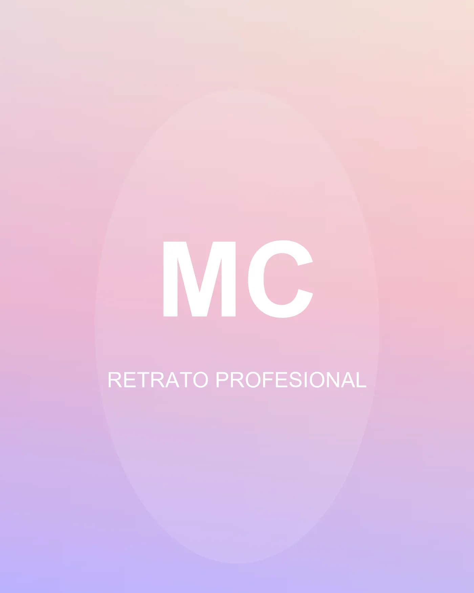
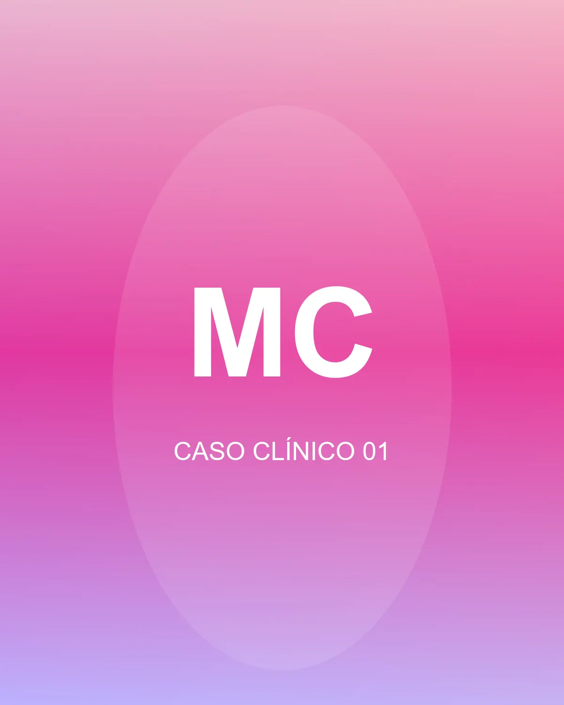
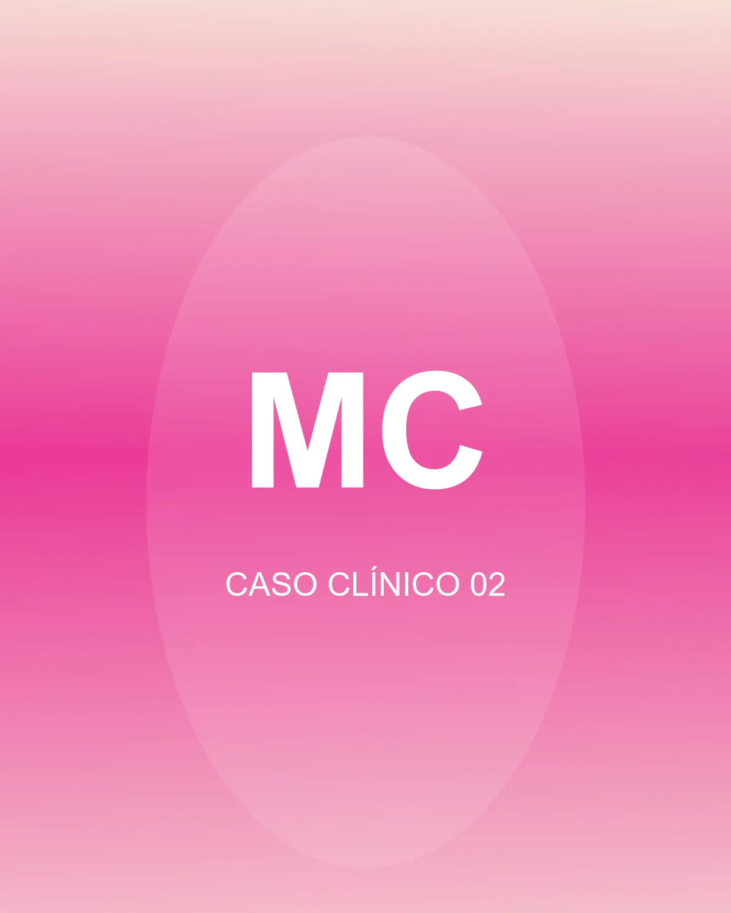
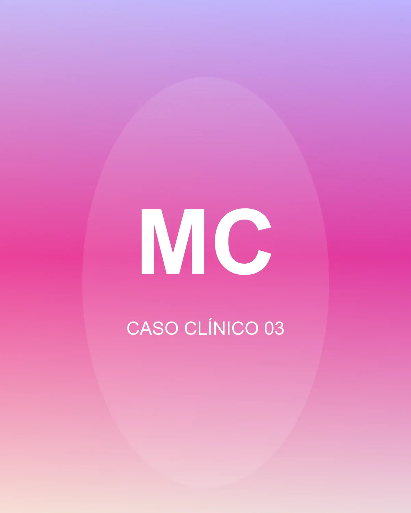

Dolor de mandíbula al despertar
Sentís la zona cansada o trabada apenas te levantás.
Odontología y estética orofacial · Corrientes
Atención enfocada en la prevención y rehabilitación de tu salud bucal, con diagnóstico cuidado y tratamientos a tu medida.
Lo que no se ve
El bruxismo es el hábito involuntario de apretar o rechinar los dientes, casi siempre de noche. Muchas veces no te das cuenta: lo nota tu cuerpo antes que vos.
Sentís la zona cansada o trabada apenas te levantás.
Molestia en las sienes que aparece por la mañana y cede durante el día.
Músculos de la cara y el cuello contracturados sin una causa clara.
Puntadas breves al tomar algo frío, caliente o dulce.
Además, señales que conviene no normalizar:
Si te identificás con más de una, conviene revisarlo con calma.
En qué te puedo ayudar
Para el bruxismo: protege el desgaste y ayuda a relajar la musculatura mientras dormís.
Alineación de los dientes y guía del crecimiento, en niños y en adultos.
Devolver función y forma cuando faltan piezas o están muy dañadas.
Tratamiento de conducto para conservar el diente cuando el nervio está comprometido.
Mejoras que respetan tu mordida y tu cara, sin sobre-tratar.
La base de todo. Encías sanas y controles a tiempo antes que cualquier estética.
Cómo funciona
Contame qué te pasa y coordinamos el primer turno.
Revisamos tu boca, tu mordida y tus hábitos. Sin apuro.
Te propongo un tratamiento realista, con prioridades y presupuesto claro.

Sobre mí
Trabajo la odontología desde la prevención y la rehabilitación: entender por qué pasa lo que pasa —el bruxismo, el desgaste, las encías que sangran, una pieza que falta— antes de proponer cualquier tratamiento.
Atiendo con turno previo, con tiempo para explicarte cada paso y decidir juntos las prioridades.
Casos propios
Trabajos realizados en consultorio, publicados con consentimiento.



Preguntas frecuentes
Por WhatsApp. Me escribís, me contás qué necesitás y coordinamos día y horario.
La atención es particular, con factura. Algunas coberturas reintegran una parte; si me pasás tu plan te confirmo antes del turno.
No. Primero tomo un molde y la mando a hacer a medida. Suele estar lista en pocos días y después la ajustamos.
Sí. En ortopedia conviene evaluar temprano para guiar el crecimiento; en la primera consulta vemos si ya corresponde empezar o solo controlar.
Bien hecho, no. El blanqueamiento profesional aclara las manchas sin desgastar el esmalte: actúa sobre la pigmentación, no sobre el diente. Antes de empezar reviso que no haya caries ni encías inflamadas y ajusto la concentración a tu caso. Si aparece algo de sensibilidad, es pasajera y se controla con las indicaciones que te doy.
Pago Largo 909, Corrientes (3400). Te paso la ubicación exacta al confirmar el turno.
Pedí tu turno y empecemos por lo importante.
Escribir por WhatsApp